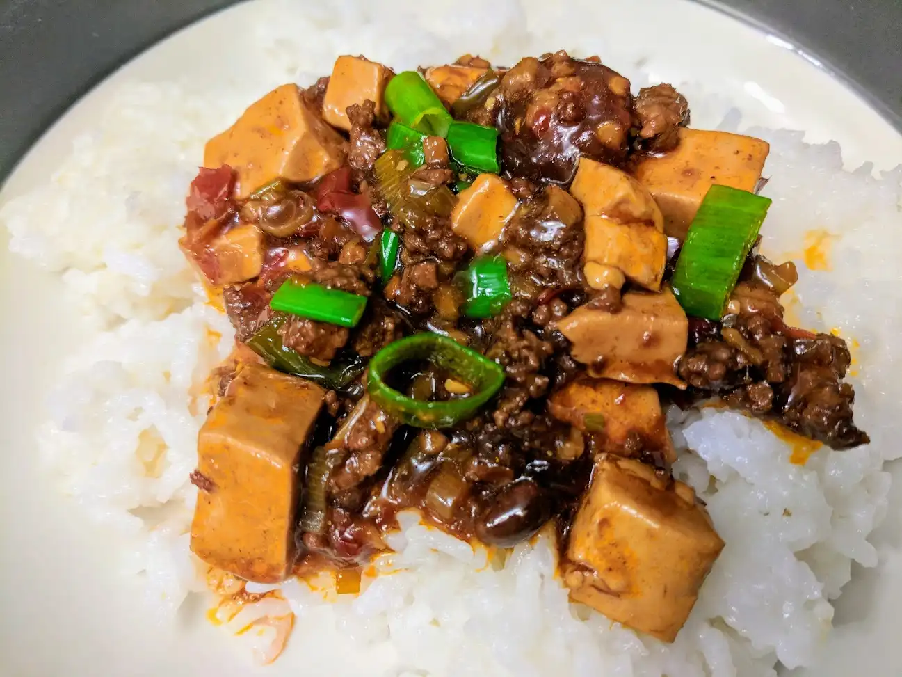
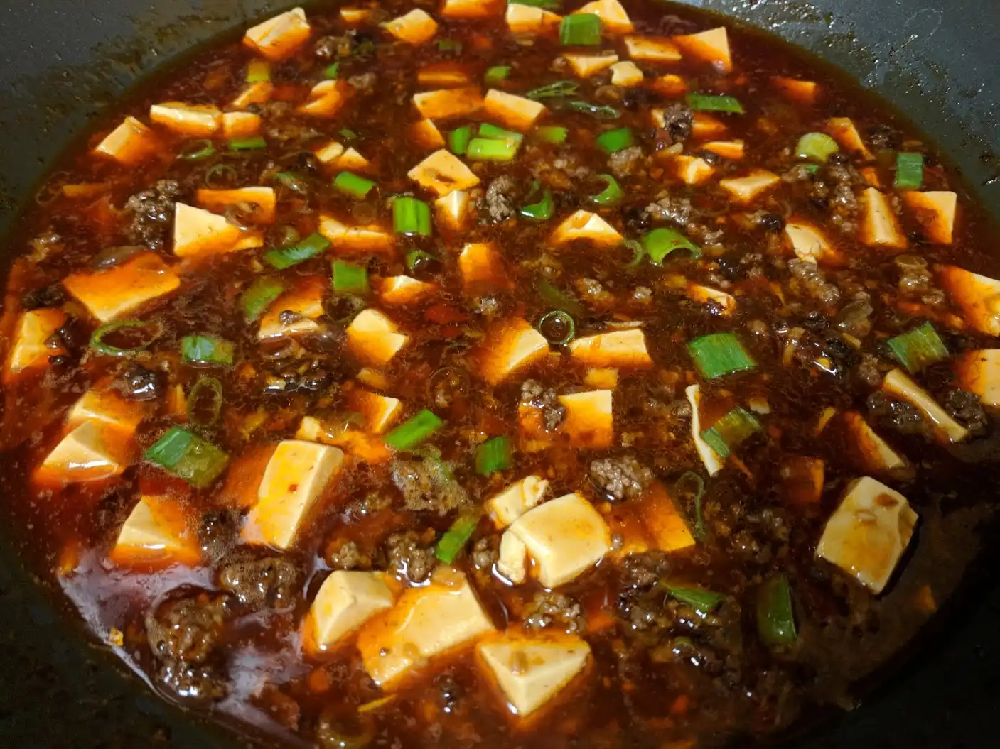

Mapo Tofu (麻婆豆腐)

- ⏲️ Prep time: 10 min
- 🍳Cook time: 15 min
- 🍽️ Servings: 4
Ingredients
Marinated Pork
- 450 g (1 lb) ground pork
- 1 tbsp soy sauce
- 1 tbsp Shaoxing cooking wine
- 1 tsp cornstarch
- 1 tsp white pepper powder
Braise
- 2 tbsp spicy doubanjiang (la doubanjiang)
- 1 tsp dou-chi
- 2-3 chopped scallions white and green separated)
- 2-4 minced garlic cloves
- 2 inch minced ginger (similar amount as garlic)
- 400 ml chicken broth or water
- 340 g (1 package) soft tofu cut into 1.5cm (½ inch cubes)
- 1 tbsp Sichuan peppercorns crushed
Directions
 1. Marinade the pork in shaoxing cooking wine, a splash of cooking oil, the soy sauce, 2. Add cooking oil to a wok and sear the ground pork until browned, chopping it up as it cooks 3. Add the doubanjiang and let it simmer for about a minute 4. Add the minced aromatics (ginger, garlic) scallion whites, and dou-chi and cook until fragrant 5. Add the stock and a splash of soy sauce, turn up the gas and bring to a boil 6. Add the tofu, lower the gas, and braise for around 15 mins 7. You’ll know it’s done when the tofu shows their trademark “pockmarks” and the seasoning sticks to them 8. Mix in the crushed sichuan peppercorns and green parts of the scallions right before serving 9. Serve over steamed rice
Contribution
- mfed3 - xmr:
48eEMdYtCQaV5wY7wvmxK6jCxKkia9dgpNTMNT1do7RLWXCwWDgSKjN3kiZ6yHbAuAXWgDGN6imnGT9NPeHWD7zX9hSyHu2